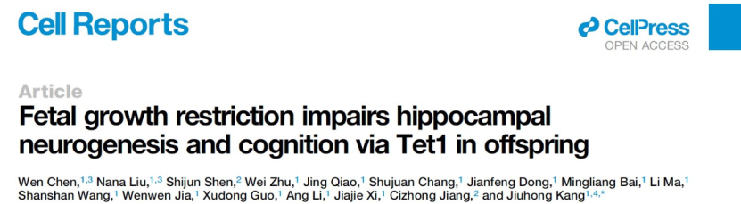
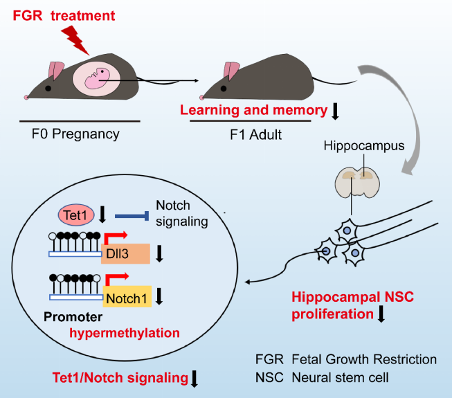

Cell Reports：揭示胎儿生长受限子代认知障碍新机制
Fetal Growth Restriction Impairs Hippocampal Neurogenesis and Cognition via Tet1 in Offspring

胎儿生长受限（Fetal growth restriction, FGR），又称宫内生长受限（intrauterine growth restriction，IUGR）是指胎儿受各种不利因素的影响，在子宫内未达到其遗传的生长潜能，即胎儿出生体重低于同孕龄平均体重的两个标准差。
FGR 是世界性的围生期严重并发症之一，在全球的发病率平均约为 5%。FGR 与出生后子代多种代谢系统及神经系统疾病密切相关，是包括认知障碍和脑瘫等在内的不良神经发育结果的重要危险因素。
大量的大规模随访研究表明，FGR 子代在儿童和青少年期具有学习能力困难和记忆障碍，例如较差的空间记忆，较低的学业成绩和较低的智商，并呈现出男性易感倾向，提示胚胎期胎儿的生长受限与出生后子代认知能力受损密切联系，但这种联系是如何介导的并不清楚。目前因缺乏对胎源性认知障碍的病理机制的深入理解，临床上尚缺少针对 FGR 子代认知障碍的干预治疗方案。
2021 年 11 月 2 日，同济大学附属第一妇婴保健院康九红教授课题组在《Cell Reports》杂志在线发表题为 Fetal Growth Restriction Impairs Hippocampal Neurogenesis and Cognition via Tet1 in Offspring 的研究论文，该研究揭示了 DNA 羟甲基化酶 Tet1 调控宫内生长受限子代海马神经发生受损和认知缺陷的作用和机制。
FGR 导致子代海马神经干细胞（NSC）增殖降低，且从出生后早期到成年期诱导海马神经发生持续性减少。进一步发现 FGR 小鼠海马神经干细胞中 Tet1 表达的持续下降。机制上，Tet1 下调引起 Dll3 和 Notch1 启动子区的高甲基化和 Notch 信号通路的抑制，导致 NSC 增殖减少。在海马齿状回（dentate gyrus, DG）区增加 Tet1 的表达可激活 Notch 信号，促进海马神经干细胞增殖，并改善 FGR 子代的学习和记忆能力。
本项研究表明，FGR 出生后子代海马神经干细胞中 Tet1/Notch 的下降导致其增殖减少，可作为干预 FGR 子代认知障碍的潜在分子靶标。
FGR 子代小鼠的认知能力是否发生改变？为了探究这一问题，作者建立了两种 FGR 小鼠模型：产前地塞米松过度暴露（DEX-FGR）和蛋白质限制饮食诱导的 FGR（PR- FGR）。
通过新物体识别、Morris 水迷宫和场景恐惧实验发现与对照组相比，FGR 子代海马依赖性学习记忆能力降低；同时旷场和黑白箱实验结果显示两组无差异，排除了焦虑行为对认知的干扰。
在哺乳动物海马体中，位于海马齿状回 DG 区的神经干细胞（neural stem cells, NSCs）增殖并分化为神经元和星形胶质细胞，新生神经细胞再整合到现有的回路中。这个过程即是神经发生，从个体早期发育过程开始贯穿一生，并且在成体认知过程中发挥着重要作用。
大多数动物模型数据表明 FGR 子代海马神经元数量减少，海马神经元形态异常和神经连接功能改变。但是，FGR 如何影响海马神经发生过程尚不清楚。作者检测发现，从出生后早期到成年期，FGR 子代海马神经干细胞的增殖能力持续下降，虽然干细胞向神经元和星型胶质细胞的分化能力没有改变，但是因为神经干细胞数目持续减少，最终导致神经元数目减少，神经发生受抑制。
Tet1 减少抑制 FGR 小鼠海马神经干细胞增殖 调控 FGR 小鼠海马神经干细胞增殖减少的机制是什么呢？
越来越多的证据表明，子宫内环境可以通过改变后代的表观遗传状态来编程成年疾病，从而在不改变 DNA 序列的情况下导致基因表达的永久性改变。DNA 甲基化是最广为人知的表观遗传修饰，在人类和动物中，许多异常的 DNA 甲基化与产前 FGR 及其出生后疾病相关联。
作者通过在出生后早期（第 3 天）和成年期（8 周）的海马组织、体外分离培养的海马 NSCs 中检测 DNA 甲基化酶和羟甲基化酶的表达水平，发现仅 Tet1 的表达持续性降低。通过流式细胞分析技术在体内证实了 FGR 小鼠海马 NSCs 中 Tet1 的表达降低。
Tet1 的降低是否导致 FGR 小鼠海马 NSCs 增殖能力下降？作者利用体外 DEX 处理 NSCs 模型模拟体内，发现敲降 Tet1 导致 NSC 增殖能力下降且介导了 DEX 对 NSC 增殖的抑制；过表达 Tet1 恢复了 DEX 对 NSC 增殖的抑制作用且依赖于 Tet1 的酶活性。体内外实验证明 FGR 小鼠神经干细胞中 Tet1 表达减少且抑制其增殖。
Tet1 减少引起 Notch 信号通路的下调
Tet1 减少又是如何抑制 FGR 小鼠海马 NSCs 增殖？作者对出生后早期（第 3 天）和成年期（8 周）的海马组织进行 RNA-seq 分析，发现 FGR 小鼠海马中 Notch 信号通路表达持续降低。进一步作者通过实验验证发现 FGR 小鼠海马中 Notch 信号通路的关键分子 Dll3 和 Notch1 以及下游靶基因 Hes5 的表达明显降低。
高度保守的 Notch 信号传导通路对于维持 NSCs 增殖和海马神经发生是必需的。已发现其受体 Notch1 和重要下游信号分子 Hes5 可以促进 NSC 增殖。作者利用体外细胞模型，不仅发现其配体 Dll3 正向调控 Notch1 和 Hes5 的表达，对 NSC 增殖起正向调节作用；还证明了过表达 N1ICD（Notch1 的胞内结构域）可挽救 DEX 对 NSC 增殖的抑制作用。
作者通过对公共数据的挖掘，提示 Tet1 可能直接调控 Notch 信号通路。
为了验证这一假设，作者首先在体内的海马组织中通过 ChIP、hMeDIP 和重亚硫酸盐测序实验发现 FGR 小鼠海马中 Tet1 和 DNA 5hmC 在 Dll3 和 Notch1 的启动子区的富集减少，且 Dll3 和 Notch1 的启动子区 DNA 5mC 升高。再利用体外细胞模型，证明敲降 Tet1 和 DEX 处理皆能引起 Dll3 和 Notch1 的启动子区 5hmC 结合的减少和 5mC 升高。Notch 信号通路的抑制剂 DAPT 可以抵消过表达 TET1 对 DEX 抑制 NSCs 的挽救。
以上实验表明 Tet1 减少引起 Notch 信号通路的下调，且 Notch 信号通路受 Tet1 依赖的 DNA 去甲基化的直接调控。
Tet1 作为干预 FGR 认知障碍的潜在靶标
在 FGR 小鼠海马 NSCs 中增加 Tet1 的表达能否改善其认知功能下降？作者通过向海马 DG 区双侧立体定位注射过表达 Tet1 或对照的逆转录病毒，结果发现在 FGR 小鼠海马中增加 Tet1 的表达，可以激活 Notch 信号通路，促进海马 NSCs 增殖并改善认知缺陷。
因此，作者的研究内容提示：FGR 引发的持久性 Tet1/Notch 信号通路降低持续抑制海马神经发生并最终损害成年子代学习记忆能力。作者的发现增加了对胎源性认知障碍疾病中调控机制的理解，并为 FGR 子代认知障碍的干预治疗提供新的分子靶点，具有潜在的转化应用价值。
康九红教授为本文通讯作者，康九红课题组陈文副教授和刘纳纳博士生为本文共同第一作者。同济大学博士生沈仕君、朱蔚、常书娟等参与该研究。本项目受到国家自然基金委的资助。该研究还得到同济大学生命科学与技术学院江赐忠教授、奚佳捷副教授、郭旭东研究员、贾文文副教授、李昂副教授等老师的大力支持。